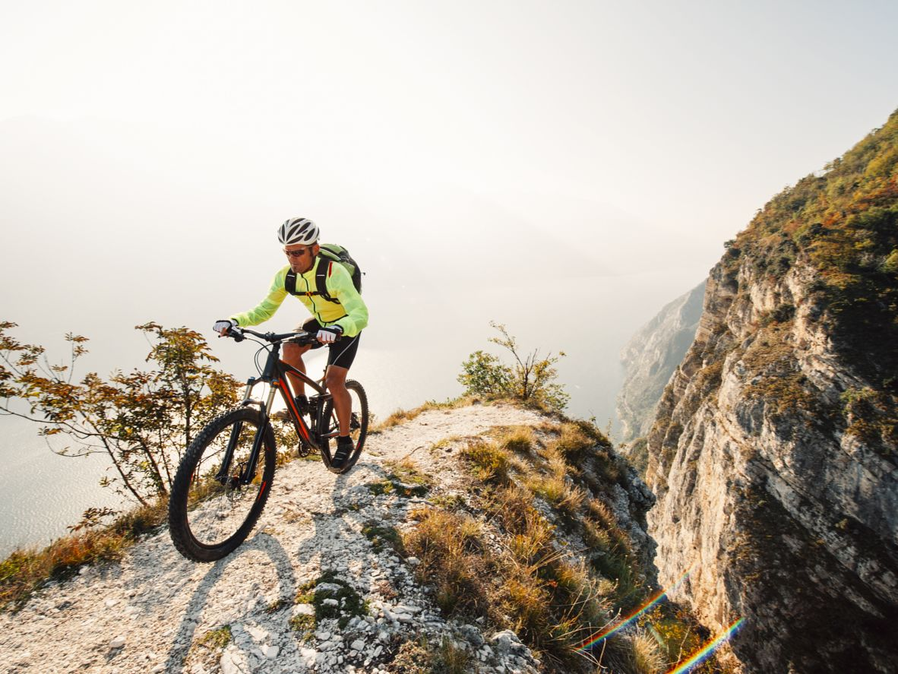

The Bangtail Divide Trail
This 24-mile stretch of smooth singletrack is the kind of classic trail that’ll keep you coming back to Bozeman. The views of just about every mountain in the state — from the Crazies to the Absarokas to the Gallatins — is one of the reasons locals like Molly Ambrogi-Yanson, from the Montana Office of Tourism, call the Bangtail Divide their favorite.
Whitefish Trail
Whitefish Trail is a fun, flowy singletrack that offers something for every ability rider, beginner to expert. Beautifully designed and eager to reinvent itself, the Whitefish Trail encompasses roughly 30 miles of singletrack, with myriad route options and a network of new possibilities like the Swift Creek Trail and Woods Lake Loop (with future trail construction planned for Lazy Creeks, Whitefish Mountain Resort and Haskill Basin). Locals enjoy exploring the trail more than once a week for its diverse terrain, scenic overlooks, grueling climbs, and a rocky cliff that is sheer gonzo.